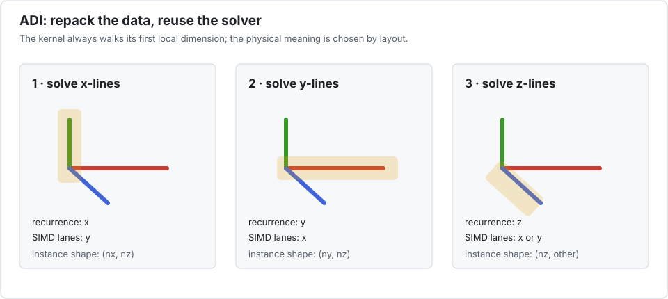

Tutorial 3 — Repacking a 3-D ADI solver
Alternating-direction implicit schemes solve many independent tridiagonal lines along one grid direction, then another. The recurrence direction changes, but the line solver does not have to.

1. Separate physical axes from kernel axes
Let the physical grid be (nx, ny, nz). During an x-sweep:
- each recurrence runs along
x; - different
yorzlines are independent; - one independent grid axis can become the Interleave batch dimension.
For example, packing across y gives a logical batch of shape (ny, nx, nz):
using Interleave
nx, ny, nz = 32, 20, 12
X = Interleave.Array{Float32,3,8}(undef, ny, nx, nz)
(size(X), instance_size(X), size(parent(X)))((20, 32, 12), (32, 12), (32, 12, 3))The logical indices are X[y, x, z]. A kernel instance has shape (nx, nz) and elements of type Vec{8,Float32}. It can solve every x-line in that instance with ordinary (x,z) indices.
2. Write a line solver, not an axis-specific solver
function thomas_lines!(x, d, u, l, b, scratch)
n, nlines = size(x)
@inbounds for line in 1:nlines
pivot = d[1, line]
invpivot = inv(pivot)
x[1, line] = b[1, line] * invpivot
for i in 2:n
scratch[i] = u[i - 1, line] * invpivot
pivot = d[i, line] - l[i, line] * scratch[i]
x[i, line] = b[i, line] - l[i, line] * x[i - 1, line]
invpivot = inv(pivot)
x[i, line] *= invpivot
end
for i in n-1:-1:1
x[i, line] -= scratch[i + 1] * x[i + 1, line]
end
end
x
endthomas_lines! (generic function with 1 method)The solver only knows that its first local dimension is the recurrence direction. Layout decides whether that dimension represents physical x, y, or z.
3. Prepare one sweep
X, D, U, L, B = (Interleave.Array{Float32,3,8}(undef, ny, nx, nz) for _ in 1:5)
fill!(X, 0); fill!(D, 2); fill!(U, -1); fill!(L, -1); fill!(B, 1)
apply!(thomas_lines!, X, D, U, L, B;
scratch=Vector{packtype(X)}(undef, nx))
size(X)(20, 32, 12)The scratch buffer has one entry per recurrence position and uses the packed element type. For parallel execution, pass the same object as a prototype; the driver creates one copy per chunk.
4. Change direction by repacking
For a y-sweep, the batch axis must become x. The logical ordering (nx, ny, nz) does it: x supplies lanes, each kernel instance has shape (ny, nz), and the recurrence runs along ny.
Moving the data there is permutedims!, the ordinary Julia verb:
Y = Interleave.Array{Float32,3,8}(undef, nx, ny, nz)
permutedims!(Y, X, (2, 1, 3)) # Y[i, y, k] == X[y, i, k]Earlier revisions of this tutorial described this step without providing it, which left the generic fallback — correct, but reaching every element through scalar indexing and paying a divrem per element to find its lane. Interleave now specialises it.
Two regimes matter, and the cheaper one is easy to miss:
- the batch axis stays put (
perm[1] == 1, such as(1, 3, 2)): no lane crosses a packet, so this is a plainpermutedims!on the packed storage; - the batch axis moves (
(2, 1, 3)or(3, 2, 1)): lanes must cross packets, which becomes aP × Ptile transpose.
If both remaining grid axes are independent, prefer the permutation that keeps the batch axis in place.
5. The three transitions are not equivalent
A full cycle needs three repacks, and they cost very differently. With the layouts above — X = (y,x,z), Y = (x,y,z), Z = (x,z,y) — on a 128×128×64 grid, P = 8:
| transition | perm | batch axis | shape | Base fallback | specialised |
|---|---|---|---|---|---|
| X → Y | (2,1,3) | moves | transposition | 1.21 ms | 0.59 ms |
| Y → Z | (1,3,2) | stays | instance-only | 2.01 ms | 0.16 ms |
| Z → X | (3,1,2) | moves | 3-cycle | 1.25 ms | 0.53 ms |
| total | 4.47 ms | 1.28 ms |
A factor of 3.7 between the cheapest and the dearest specialised transition. The batch axis is what decides: when it stays put, no lane crosses a packet and the whole thing is a permutedims! on the packed storage — which is also where the specialisation pays most, 12×, because the generic path cannot know that the packets are untouched.
6. What repacking costs over a whole cycle
Three sweeps and three repacks, same grid and machine. The baseline is Base's own generic permutedims!, which is what you get without the specialisation:
| time | share of the cycle | |
|---|---|---|
| three line-solve sweeps | 5.05 ms | — |
| repacks, Base fallback | 4.47 ms | 47% |
| repacks, specialised | 1.28 ms | 20% |
| cycle | |
|---|---|
| Base fallback | 9.52 ms |
| specialised | 6.33 ms |
A 34% improvement on the whole cycle, for a change no kernel sees.
It was measured against a hand-written fallback in this package rather than against Base's. That reimplementation was both slower than Base's and, as it turned out, wrong on 3-cycles. It has been deleted and the fallback now delegates to Base, which is the honest baseline: what a user actually gets without the specialisation. The real figure is 34%.
A natural next idea is to skip the separate pass entirely: read from the previous layout and write straight into the next one. The table above bounds what that could buy. Even a perfect fusion, with the repack costing literally nothing, would take the cycle from 6.33 ms to 5.05 ms — 20% more, against the 34% the specialised repack already captured.
And that bound is optimistic. Fusing means the sweep reads or writes across the packed axis, so the contiguous packet loads that make DLI fast become strided, and the sweep itself slows down. It also costs the property the whole package is built on: the kernel would have to know about two layouts instead of none.
Measure before assuming otherwise, but on this evidence the separate repack is the right trade: it captured 35%, and it leaves at most 15% on the table for a large loss of simplicity.
Repacking is paid once; the recurrence may run for many time steps or nonlinear iterations. The approach is compelling when the packed layout is reused enough times to amortize the data movement. It is weak when every solve is tiny and a full transpose is required before and after each call. Measure the complete stage:
reorder → repeated line solves → reorder backDo not report the line solver alone if the application cannot keep data in the packed layout.